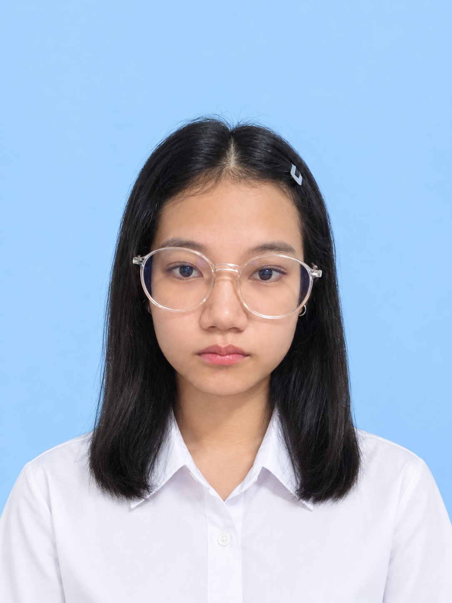

Creative media · Game · UX/UI
Hi, I’m
Ant.
Miss Ornicha Boonkratoke is a creative media student interested in games, multimedia, UX/UI, and interactive media — turning ideas into digital experiences that feel clear, useful, and alive.

MAKE
IT REAL.
IT REAL.
01 / About
Designing with
a human point of view
My goal is to grow into a digital media designer and developer who creates work that is visually appealing, functional, and impactful.
“Good creative work makes complex things feel easier to understand.”
NameMiss Ornicha Boonkratoke
NicknameAnt
Born6 April 2006
Based inUdon Thani, Thailand